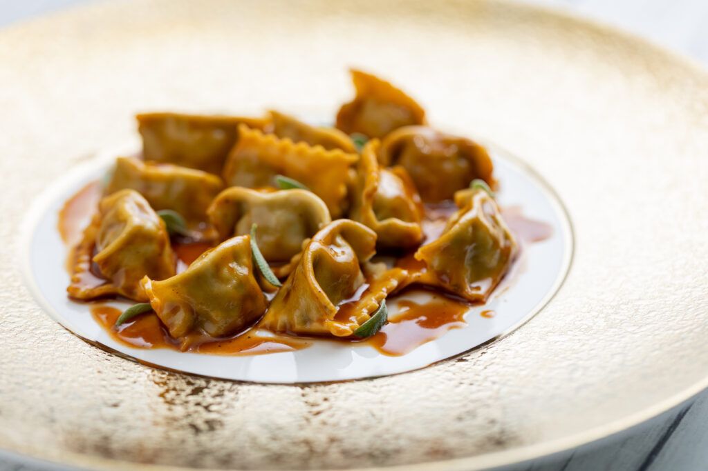

Ravioli del Plin (Agnolotti with Gravy)

Description
It is said that agnolotti were invented by a French chef in Torino during a siege, at a time when many basic provisions were lacking. There was flour, and so it was possible to make fresh pasta. Other ingredients included some leftovers which were chopped up and combined to attenuate the various flavours. This mixture was put into little pouches of pasta because there were no extra eggs to bind together the mixture together for making even meatballs.
Along with the origins of agnolotti we find the inspiration for other examples of our “humble” dishes (“humble” agnolotti, indeed!): urgentcnecessity, lack of sufficient ingredients, the importance of not wasting anything, the simplicity of the basic components and a bit of imagination. But I am not so willing to accept the origins of this dish as attributed to the French chef mainly because agnolotti have been a part of the cuisine of this region for too many generations, and in a wide variety of versions, practically one for each little Langhe village and farmhouse. For a long time this dish was probably served as the single-course main Sunday meal, and over time a rare balance of flavours was achieved: the gravy from the roast meat was the sauce for the agnolotti while the meat itself was used in the filling.
In the highest and poorest parts of the Langhe, where veal or pork were often not available for economic reasons, they substituted pork and veal with barnyard rabbit, which was cooked and boned, and then used both for the filling and the sauce. This is a delicious variation and has a delicate, yet not by any means insubstantial flavour, and was skilfully prepared by the Langhe women.
Ingredients
Pasta dough
- 400g (4 cups) flour
- 4 eggs
Filling
- a combination of 500g (generous 1 lb) veal and pork, for roasting
- a sprig of rosemary
- 2 garlic cloves
- 1 small cabbage or head of escarole
- butter
- grated Parmigiano-Reggiano cheese
- salt, pepper, nutmeg
Steps
- Roast the veal and pork with garlic and rosemary. Finely mince the roasted meat and put it in a bowl.
- Boil, drain and finely chop the cabbage or escarole, drain and lightly brown in the saucepan with a bit of butter.
- Add to the meat and add a handful of grated Parmigiano-Reggiano cheese, four egg whites, and a pinch each of salt, pepper and nutmeg. Mix well with a wooden spoon and set aside.
- Make the pasta with the egg yolks and flour as for the tagliatelle
- Roll it out one batch at a time into a thin sheet about 10cm (4 inches) wide. (Keep the remaining dough covered to avoid drying out.)
- Place a very small amounts of the filling along one side of the sheet, leaving the other side empty to fold over. The mounds of filling should be about the size of a small nutmeg and be about 4cm (11/2 inches) apart, leaving room for the border.
- To close the agnolotti: Fold the empty side of the sheet of pasta over to cover the mounds of filling. With the external side of your pinkie (thumb in the air)press firmly around the mounds of filling to form the borders, while gently pressing the top of the pasta with the other hand to ensure that no air is trapped inside.
- Cut into squares and leave to dry on the dish towels which have been dusted with flour, or if available, semolina. The finished agnolotti will be little square pockets of pasta, not more than 4cm (11/2 inches) per side.
- Set aside to slightly dry on a clean dish towel sprinkled with flour, then cook them in abundant salted boiling water for a few minutes, drain well and serve with the gravy from the roast.
Translator’s note: The use of the gravy from roasted meat as a sauce for pasta is not infrequent. By “gravy", however, it is meant the liquid and drippings from the roasting pan simply sieved or pureed, without the addition of any other ingredients such as flour or cornstarch.
Beppe Lodi; Luciano De Giacomi, Nonna Genia. Boves: Araba Fenice Edizioni, 2007, p.60
Home